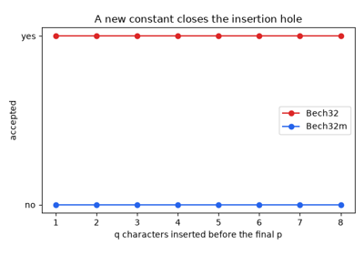
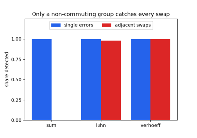
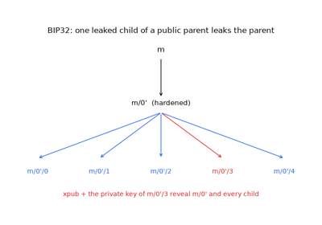
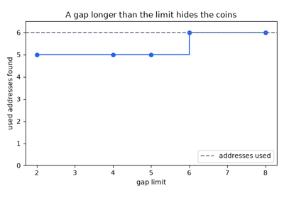
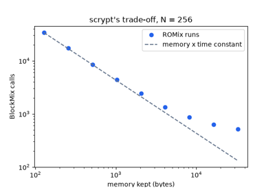
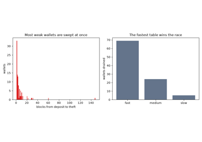

Examples#
This gallery walks through blockchainkit.wallets, one experiment per
breakthrough on the wallets history page:
the error-detecting codes behind addresses, from BCH codes and Verhoeff’s
check digit to Base58Check, Bech32 and Bech32m; PBKDF2, scrypt and the
brain wallets that had neither; hierarchical deterministic keys, mnemonic
seed phrases and derivation paths; and shared control of keys, from P2SH
multisig and threshold ECDSA to social recovery and ERC-4337.
Each script is self-contained and runs with
python examples/wallets/<section>/<script>.py.
Address encodings#
Writing a key’s hash so that a typo is refused rather than paid.

Bech32m and the insertion flaw in Bech32 (BIP350, 2020)
Error-detecting codes#
Catching the mistakes people make when they copy a number.

Verhoeff’s check digit and detecting transpositions (1969)
Key derivation#
One seed, written as words, for a whole tree of keys that every wallet can find again.

Hierarchical deterministic wallets (BIP32, 2012)

Multi-account derivation paths (BIP44, 2014)
Key stretching#
Making every guess at a password cost time and memory, and what happens without it.

scrypt and memory-hard key derivation (2009)

The brain-wallet drain (Vasek et al., 2016)